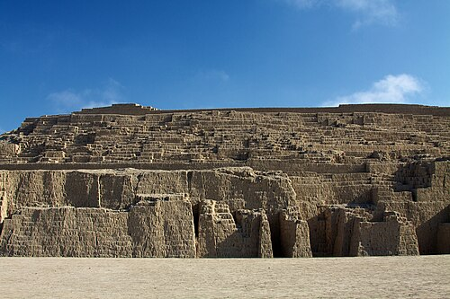
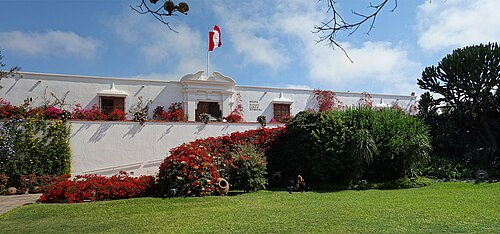
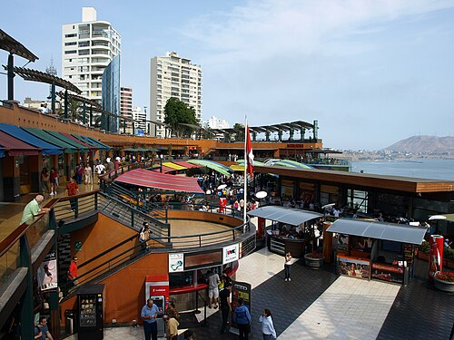

This map shows 18 of the most-searched sights in Lima as photo spots, ranked by how often people search for them: Huaca Pucllana, Larco Museum, Larcomar, Parque Kennedy and Lima Cathedral lead the list. Every spot has a pin on the subject and a phone icon showing where to stand, with tips for shooting it on your phone: which lens to use, how to frame it, a settings tip and the best time of day. Directions and Navigate buttons take you to the standing point on foot or by public transport. 3 spots are free to view; the full map is for members.
The 3 free photo spots
1Huaca Pucllana

Huaca Pucllana is a huge stepped pyramid of adobe and clay in the middle of Miraflores, built from seven staggered platforms. It was a ceremonial and administrative centre of the Lima Culture, who lived on the central coast of Peru between about 200 and 700 AD. The enclosure is over 500 metres long, 100 metres wide and 22 metres high. The site museum opened in 1984.
It photographs well because the pyramid is built from rows of small bricks, which catch strong light and throw sharp shadows across the walls. Modern apartment blocks rise right behind it, so you can show an ancient structure inside a busy city. The best-known shot is the pyramid lit up at night, taken from the visitor paths or the restaurant side. Lights and shadows then play across the brickwork.
For the evening shot, arrive around sunset and stay into the evening, before the lights go off. This is about 10:30 pm, but the timing may change. Keep your phone steady against a wall or rail and let it take its time in low light. For a different view, stand on Calle General Borgoño and frame the yellow entrance façade with the site name, the pyramid's adobe face and the street traffic. Check the official site before you go, for entry and photography rules.
Where it is: Huaca Pucllana is in the Miraflores district of central Lima, on General Borgoño (block 8). The pyramid sits right among the apartment blocks and streets of the neighbourhood.
Shooting it on your phone
Lens: Start with the default lens (1x) for the whole pyramid with the lights on it. Switch to ultra-wide (0.5x) from the entrance side to fit in the façade, the adobe wall and the street. Use telephoto (2x-5x, depending on your phone) to pick out the brick rows and the light and shadow on them.
Where to stand: Stand right at the subject: the phone icon on the map marks the spot. From the site's visitor paths or the restaurant side you can shoot the illuminated pyramid before dinner, with strong light and shadow across the adobe bricks. As an alternative, a second view shows the stepped pyramid in the foreground with Miraflores apartment blocks behind it. Another is from Calle General Borgoño, for the yellow entrance façade with the pyramid's adobe face and street traffic in the same frame.
Framing: Turn on gridlines and keep the stepped edges of the platforms level with them. Put the pyramid in the lower two-thirds and leave the sky above it. Include a bit of path or wall in front to give a sense of scale. For the street view, line up the yellow façade with the pyramid wall behind it.
Settings tip: After dark, switch on night mode and hold the phone still against a rail or wall until the shot finishes. Tap the brightest part of the pyramid to focus, then pull the exposure slider down a little so the lit bricks don't turn pale.
Best time: Around sunset and into the evening, before the lights are turned off. This is about 10:30 pm, but it may change.
2Larco Museum

The Larco Museum is a privately owned museum of pre-Columbian art in the Pueblo Libre district of Lima. It is housed in an 18th-century vice-royal building, so the setting is as much a part of the picture as the collection. Its galleries give a chronological tour of about 5,000 years of Peruvian history, and it is especially well known for its gallery of pre-Columbian erotic pottery. There is also a Gold and Silver Gallery with crowns, earrings, masks and other ornaments worked in gold.
The collection began in 1925, when Rafael Larco Herrera acquired around 600 ceramic pieces. His son, Rafael Larco Hoyle, built it up, and the museum first opened to the public on 28 July 1926, Peru's Independence Day.
For photographers, the appeal is the mix of old building and carefully lit objects. Outside, step back far enough to take in the building's lines, then move in for details such as doorways, walls and plants. Inside, display cases are the main subject: ceramics and gold ornaments make strong close-ups when you fill the frame with one object. Reflections in the glass are the usual problem, so angle yourself slightly off to one side rather than shooting straight on. Rules on photography inside galleries can differ from room to room, so look out for signs and ask staff if unsure.
Where it is: The Larco Museum is in the Pueblo Libre district of Lima, in an 18th-century vice-royal building.
Shooting it on your phone
Lens: Use the default lens (1x) for most shots of the building and the display cases. Switch to the ultra-wide (0.5x) for tight courtyards or to fit more of the façade in. Use the telephoto (2x or more, depending on your phone) for details on ceramics and gold pieces.
Where to stand: Stand right at the subject: the phone icon on the map marks the spot. Frame the exterior from wherever visitors can stand, then go inside for the collection.
Framing: Turn on the gridlines and keep the building's vertical lines straight to avoid a leaning look. Outside, fill the frame with one feature such as a doorway or a section of wall. Inside, shoot one object at a time and stand slightly off-centre to the case to avoid your own reflection.
Settings tip: Tap on the object to focus, then slide the exposure down a little so gold and bright pieces keep their detail against dark backgrounds. Keep the flash off, as it bounces off glass. Hold the phone steady against your body, since a tripod is unlikely to be allowed.
Best time: Outside, daylight hours give the cleanest views of the building. Inside, lighting is fixed, so time of day matters less; going earlier or at a quieter moment gives you clearer access to the cases.
3Larcomar

Larcomar is a shopping centre built into the cliff edge in Miraflores, with open-air terraces stepping down towards the Pacific. It photographs well because the whole coastline opens up in front of you: sea, cliffs and, on a clear evening, the sky changing colour above the water. The terrace facing San Lorenzo Island is the classic postcard angle, and from there the frame shows the Pacific coastline, the cliffs and the island. The centre opened on 27 November 1998 and was designed by architect Eduardo Figari Gold. You reach it through Alfredo Salazar Park, which also has a scenic overlook, a children's playground and a few monuments, including a statue of Paddington Bear added in 2015. The terrace is popular, so arrive early if you want a spot at the railing, ideally about an hour before sunset. Start with a wide shot that includes the cliffs and the water, then move in on smaller details: the island, the lines of the cliffs, people at the rail. Keep your lens clean, because sea air can leave a haze on it. If you have time afterwards, Parque del Amor along the coast is a separate sunset photo spot with the El Beso sculpture.
Where it is: Larcomar is in Miraflores District, in Alfredo Salazar Park where José Larco Avenue meets the Malecón de la Reserva. It sits on the cliff edge, directly across the street from the JW Marriott Hotel Lima.
Shooting it on your phone
Lens: Use the default lens (1x) for the main terrace view, then switch to ultra-wide (0.5x) to fit more cliff and coastline into the frame. Try telephoto (2x-5x, depending on your phone) to pick out San Lorenzo Island or details along the shore.
Where to stand: Stand right at the subject: the phone icon on the map marks the spot. Stand on the open-air terrace at Larcomar facing San Lorenzo Island and the Pacific. From here the view shows the Pacific coastline, the cliffs and San Lorenzo Island. If the terrace is full, Parque del Amor along the coast is a second option, a separate sunset photo spot with the El Beso sculpture.
Framing: Turn on gridlines and place the horizon on the top or bottom line so the sea or the sky fills most of the frame. Include a curve of the cliff edge or the terrace railing in the foreground for depth. Keep the horizon level, because it is obvious over open water. Parque del Amor, with the El Beso sculpture, is an alternative if you want a different sunset setting.
Settings tip: Tap on the sky or sea to focus, then slide the exposure down a little so the sunset colours do not wash out. After the sun has gone, try night mode and brace your phone on the railing to keep it steady.
Best time: About an hour before sunset, which also helps you get a place at the railing before it fills up.
15 more spots for members
These spots are on the map as grey numbered pins. Where to stand, the phone tips, photos and directions for them come with Explorer membership.
- 4Parque Kennedy · members
- 5Metropolitan Cathedral of Lima · members
- 6Basilica and Convent of San Francisco, Lima · members
- 7Lima Art Museum · members
- 8Plaza San Martín, Lima · members
- 9Plaza Mayor, Lima · members
- 10Government Palace, Peru · members
- 11Circuito Mágico del Agua · members
- 12Chinese Arch, Lima · members
- 13Palacio de Torre Tagle · members
- 14Casa de Aliaga · members
- 15Plaza de toros de Acho · members
- 16Basilica and Convent of Santo Domingo, Lima · members
- 17Palacio Municipal de Lima · members
- 18Archbishop's Palace, Lima · members
Get every spot with Explorer membership
Explorer opens every spot on every map in the library: where to stand, how to frame it on your phone and how to get there, plus the Xdatrys Maps app with maps saved on your phone for use without signal. $9.99 a month or $59.99 a year; cancel any time.
Join Explorer Compare free and Explorer
Not ready to join?
Get Pocket Lens, our free daily smartphone travel photography newsletter.
Free, and you can unsubscribe at any time. If the form does not show, sign up on our newsletter page.
Questions
What are the top photo spots in Lima?
The first three on this map are Huaca Pucllana, Larco Museum and Larcomar. They are ranked by how often people search for them. The full map has 18.
Where should I stand to photograph Huaca Pucllana?
Stand right at Huaca Pucllana: the phone icon on the map marks the spot. Start with the default lens (1x) for the whole pyramid with the lights on it.
When is the best time to photograph the Larco Museum?
Outside, daylight hours give the cleanest views of the building. Inside, lighting is fixed, so time of day matters less; going earlier or at a quieter moment gives you clearer access to the cases.
How do I get to Larcomar?
No Underground or tram stop is listed for this spot, so start from central Miraflores and walk or take a taxi to the junction of José Larco Avenue and the Malecón de la Reserva.
Credits
Map data © OpenStreetMap contributors (ODbL); base map built with Protomaps from OpenStreetMap data. Photos from Wikimedia Commons, credited under each photo with their licence. Background reading for the free spots: Huaca Pucllana, Larco Museum, Larcomar (Wikipedia, CC BY-SA). Access rules and opening times change: check before you go.